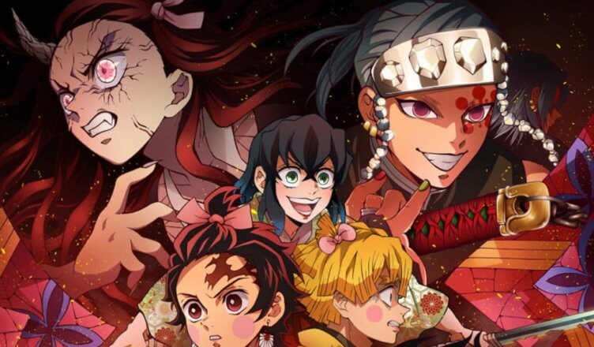
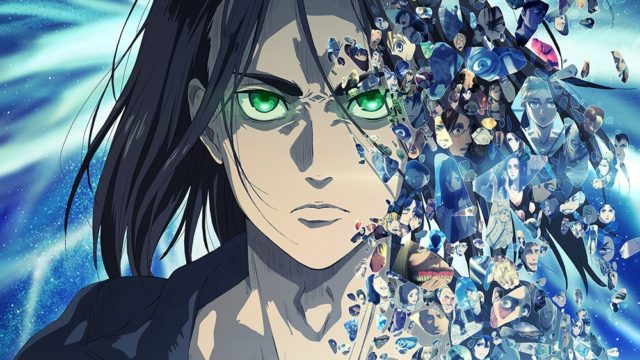

Destaques e indicações do dia
Demon Slayer o novo queridinho, conheça toda a história

Neste início de 2022, Demon Slayer: Kimetsu no Yaiba tomou a frente como um
dos animes mais populares da atualidade. Com personagens carismáticos, drama
na medida certa e cenas de ação de acelerar o coração, a série da Ufotable
segue conquistando fãs ao redor do mundo, e prova que ainda tem muita lenha boa
para queimar até seu encerramento nas telas.
Confira um resumo de todos os principais arcos do anime e mangá e descubra
o que esperar das próximas temporadas de Demon Slayer.
Sinta o estrondo, tatakae!

Os fãs de Shingeki no Kyojin (Attack on Titan, no ocidente) receberam com empolgação a quarta temporada do anime que
adapta a obra de Hajime Isaiyama, alardeado como “a temporada final”. Mas essa empolgação deu lugar à frustração quando
tudo acabou após meros 16 episódios sem dar o tal final prometido ao público. Ou será que não ?
Logo após sua conclusão, foi confirmado que o ano 4 da série terá uma segunda parte, agora sim com o encerramento da
história e o final da jornada de seus personagens. E o que esperar dos próximos episódios?
Leia nossa lista e descubra!
Voltar ao topo